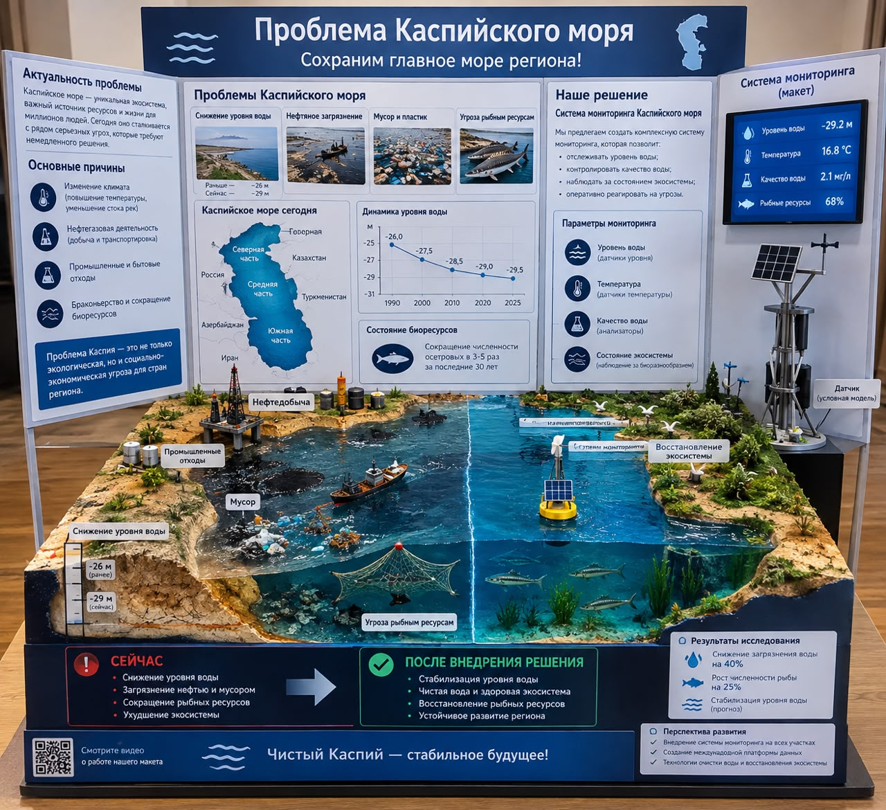

Наш макет проекта

На макете показаны основные экологические проблемы Каспийского моря: снижение уровня воды, нефтяное загрязнение, мусор и пластик, а также сокращение рыбных ресурсов.
Почему Каспий требует внимания
Примерное снижение уровня за 1996–2021 гг.
Изменение температуры воздуха над бассейном за тот же период.
Цель
Выявить причинно-следственные связи экологических изменений Каспия и предложить понятную модель действий.
Caspian Change Map
Северный Каспий
Устье Жайыка
Северо-восточное побережье
Район Актау
Мангистауское побережье
Сравниваются чувствительность береговой зоны, экологическая уязвимость, антропогенная нагрузка и последствия.
Caspian Future Index
CFI = W + E + A + V
Учебный авторский индекс, не официальный экологический показатель.
11
11
10
9
9
10
Три сценария
01 — Высокий риск
Усиление изменений и рост уязвимости.
02 — Адаптация
Мониторинг и адаптация территорий.
03 — Ответственный Каспий
Данные + действия + экологическая культура.
Решение проблем
Единая система наблюдения
- Установить датчики уровня и температуры воды.
- Регулярно проверять качество воды и состояние экосистемы.
- Создать общую платформу данных для стран Каспийского региона.
Сокращение отходов и нефтяного загрязнения
- Усилить контроль за нефтедобычей и транспортировкой.
- Организовать очистку берегов и сбор пластика.
- Быстро реагировать на утечки и промышленные сбросы.
Восстановление биоресурсов
- Бороться с браконьерством и незаконным выловом.
- Защищать места размножения рыб и создавать охраняемые зоны.
- Восстанавливать прибрежные экосистемы и проводить экологическое просвещение.
Главная идея
Проблему Каспийского моря нельзя решить одной мерой. Нужна совместная работа государств региона: постоянный мониторинг, снижение загрязнения, защита рыбных ресурсов и восстановление экосистем.